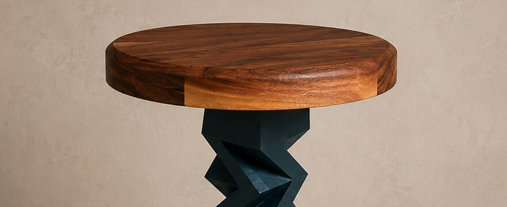

Studio
Concevoir la forme.
Façonner la matière.
STILL imagine et fabrique du mobilier contemporain en bois massif. Chaque pièce naît d’un dialogue entre dessin, proportion, assemblage et lumière.
Conçu et fabriqué en Belgique.

Une matière vivante,
des lignes essentielles.